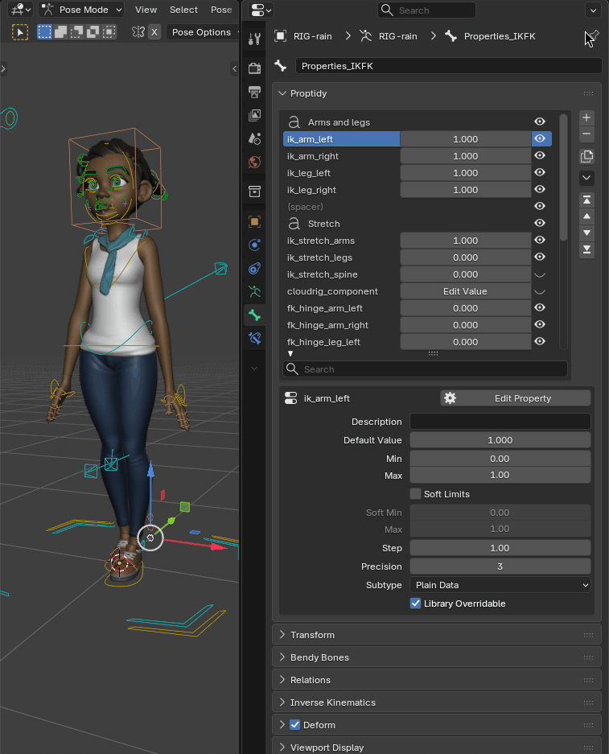
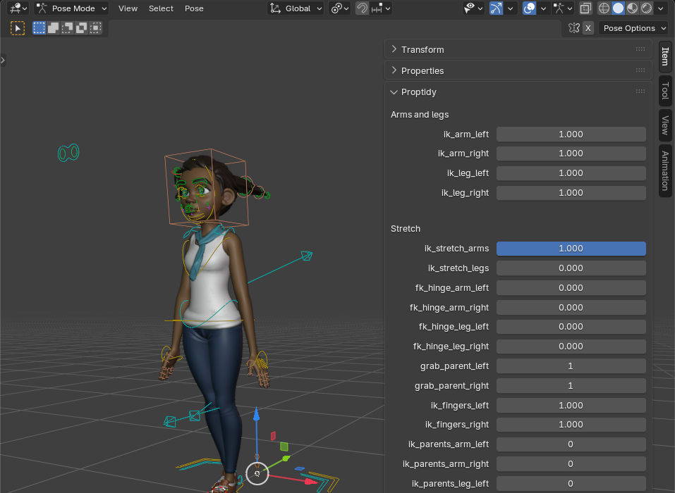
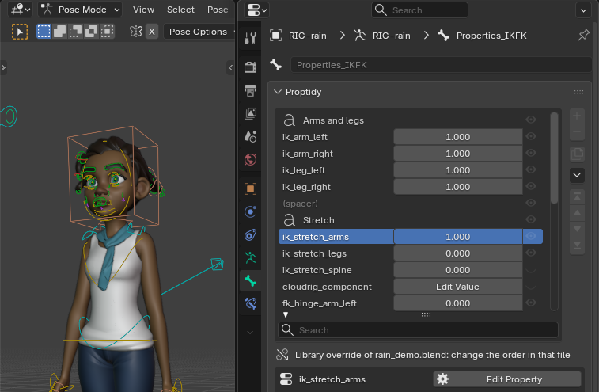

Blender's order, and yours
![Two Properties editors side by side on the Bone tab of Rain's Properties_IKFK. Left, labelled 'Blender's Custom Properties: by name': cloudrig_component, fk_hinge_arm_left, fk_hinge_arm_right, fk_hinge_leg_left, fk_hinge_leg_right, grab_parent_left, grab_parent_right, then ik_arm_left and ik_arm_right in the middle of the list. Right, labelled 'Proptidy: your order': the heading Arms and legs over ik_arm_left, ik_arm_right, ik_leg_left and ik_leg_right, a spacer, the heading Stretch over ik_stretch_arms, ik_stretch_legs and ik_stretch_spine; ik_stretch_arms is selected and its settings are below the list: Description 'Stretch the arms when in IK', Default Value 1.000, Min 0.00, Max 1.50, Soft Limits on, Soft Min 0.00, Max 1.00](img/compare.png)
Why not number the names? (38 broken driver targets on Rain)
| Number prefixes in Blender | Move to Top in Proptidy | |
|---|---|---|
| names changed | 5 | none |
| driver targets left pointing at a missing name | 38 | 0 |
| driver values changed (772 drivers at 6 frames) | 246 of 4,632 | 0 |
Rain's five IK switches put first both ways. Same result on Blender 4.2, 4.5, 5.2 and 5.3.
Settings without the pop-up

Same settings as Blender's pop-up
The fields write the same settings as Blender's pop-up but never rewrite the value, so an array longer than 32 values is not cut to 32 as it is there. Type and name stay in Blender's pop-up, one button away.
The animator's Sidebar

Set it once in the rig file

More on files and tabs
The order is saved in the .blend; moving never touches values, keyframes or drivers. Copy Layout to Selected copies a layout to other selected bones or objects. On the Object, Bone, Object Data, Material, Scene, World and Collection tabs.
Known limits
Linux only so far; move buttons, no drag-and-drop.
All limits
- Headings and spacers, no collapsible groups. Rename and type changes stay in Blender's pop-up and do not rewrite drivers.
- Proptidy is pure Python on Blender's own API, but Windows and macOS have not been tested; if it doesn't work as described on your system, the 14-day refund covers it.
- Blender's own Custom Properties panel stays, sorted by name. Enum (drop-down) properties: Description and Library Overridable only.
proptidy_layout: on Blender 4.2 to 4.5 without the add-on it shows as a text property you can delete. USD and Alembic on 4.2 to 4.5 export it: untick their Custom Properties option, or use Sort by Name first. glTF leaves it out while Proptidy is enabled; FBX never exports it.- A rig ordered on 4.x and linked into a 5.x shot shows that text until the rig's own file is saved once on 5.x with Proptidy.
- Not covered: custom properties on bone collections, sequencer strips, textures, particle settings and node trees.
- It does not build a rig UI (icons, conditions, operator buttons, exported scripts) and does not add or delete one property across many objects.
- A property renamed through Proptidy's Edit Property button keeps its row; renamed through Blender's own panel or a script, it moves to the bottom. Properties added by Blender's New button, a script or Rigify appear at the bottom.
- In Edit Mode the Bone tab shows a note instead of the list. English only.
- Uninstalled, your files keep every property, value, keyframe and driver; Blender's panel shows them sorted by name again.
Details
Buying, install, privacy
- Buying: secure checkout by Polar; the download arrives by email right after payment. The zip is the extension itself, with the full source and license inside. $6 once, every future update included. If it doesn't work as described and we can't fix it, email us within 14 days of purchase for a full refund (terms).
- Install: Edit > Preferences > Get Extensions, the drop-down at the top right, Install from Disk..., pick the zip. If Blender asks about internet access, Continue Offline is fine. Step by step: quick start.
- Privacy: no network calls, no telemetry, no license check, no account. Proptidy changes only the custom properties and order data you act on, saved in your .blend.
- Support: support@ochrestack.com, with your Blender version, your system and, if you can, a small .blend.
How we tested
Tests and timings
- Automated tests under Blender itself: 259 passed on 4.2.23 LTS, 261 on 4.5.15 LTS, 263 on 5.2.3 LTS and 263 on the 5.3.0 release candidate, none failing (a few are skipped where a Blender version lacks the feature).
- In a real Blender window on 4.2.23 LTS, 5.2.3 LTS and the 5.3.0 release candidate, driven by mouse and keyboard on Rain, with the zip installed by Blender's own installer: 47 of 47 steps passed, every button, field and menu, with no Python error.
- A separate review tried to break it before release; every finding is fixed or listed above. On Rain linked into a shot file (plain link, library override, two-level override, after a resync) the order and the greyed-out buttons were right on all four versions. In a shot file with Rain under a library override, an undo step took 166 to 264 ms with Proptidy on or off, within 6 ms of each other.
- On a pose bone with 200 custom properties, Proptidy's own panel draws in 2.6 to 3.1 ms; a full Properties editor redraw takes 20.9 to 35.4 ms on 4.2, 5.2 and 5.3.
- Every image on this page is a capture of a real Blender 5.2.3 LTS window with Proptidy 1.0.1 installed from the same zip you download; each click and keystroke on Proptidy was sent as real mouse and keyboard input.
$6 once · 14-day refund
Rain Rig (CC) Blender Foundation | studio.blender.org, CC BY 4.0; not included, and Blender Studio does not endorse Proptidy.